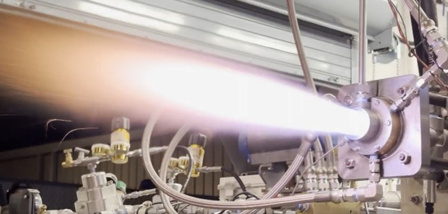

Propulsion & Energy Research Lab (PERL)
Undergraduate Researcher
November 2021 — December 2024

Role Overview
Served as an undergraduate researcher at UCF's Propulsion & Energy Research Laboratory for over 3 years, contributing to Rotating Detonation Engine (RDE) research from test preparation through hot fire execution. Owned multiple critical systems throughout the testing campaign and contributed to 5 AIAA publications.
Key Responsibilities
- Wrote test procedures for hot fire tests conducted on Rotating Detonation Engines
- Owned P&ID components, high-speed cameras, LabVIEW, circuitry, and propellant supply of testing campaign
- Calculated operating regimes of Rotating Detonation Engines for compressible propellants using MATLAB
- Led design and fabrication of UCF's first Small-Scale Rotating Detonation Engine
Research Contributions
- Small-Scale RDE — design, fabrication, and test campaign lead
- Gaseous CH4/O2 RDE — Project Manager for methane/oxygen bipropellant system
- Additively manufactured Inconel 718 RDE hardware — material characterization
- Exit geometry comparative analysis — stagnation pressure calculation methods
Publications Resulting from This Work
- "Additively Manufactured Inconel 718 In Small-Scale Rotating Detonation Rocket Engines" — AIAA SciTech 2025
- "Investigation of the Potential Scaling Effects of Rotating Detonation Rocket Engines" — AIAA SciTech 2025
- "Comparative Analysis of Exit Geometries in Small-Scale Rotating Detonation Engines" — AIAA SciTech 2025
- "Exploring Operability and Design Characteristics of a Small-Scale Methane/Oxygen Jet-in-Crossflow RDE" — AIAA Region II 2024
- "Base Drag Considerations to Determine Equivalent Available Pressure in the RDRE" — AIAA Aviation 2023